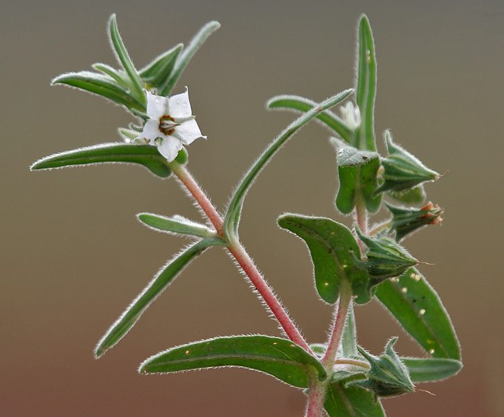

छोटा कुलफाIndian Borage
Trichodesma indicum · Boraginaceae · FLR-0368

- Scientific name वैज्ञानिक नाम
- Trichodesma indicum (L.) Lehm.
- Family कुल
- Boraginaceae
- Hindi हिंदी
- छोटा कुलफा
- Local names स्थानीय नाम
- chhota kulpha, andhahuli, adhapushpi, nilakrai
- Status here यहाँ की स्थिति
- native
- Movement आवागमन
- Resident, here all year
- Known from कहाँ दर्ज
- Others have published records from the wider Awadh–Purvanchal plain, none yet from Basti–Ayodhya अवध–पूर्वांचल से दूसरों के प्रकाशित अभिलेख, बस्ती–अयोध्या से अभी नहीं
- IUCN IUCN
- not evaluated
- Review समीक्षा
- not yet reviewed
When to look कब देखें
Season not recorded. मौसम दर्ज नहीं।
Uses and possibilities उपयोग और संभावनाएँ
“Traditional medicine” means a documented traditional use, not a claim that it works. Nothing on this page is medical advice.
Drawn from the documented uses in the profile below, where each is labelled traditional, current or a research lead. All uses →
Tell it apart from इनसे अलग पहचानें
छोटा कुलफा / Indian Borage
Trichodesma indicum (L.) Lehm. — Boraginaceae
छोटा कुलफा (अंधाहुली / अधःपुष्पी) — यह सूखी, पथरीली और रेतीली जमीनों पर उगने वाला एक बहुत ही कठोर, खुरदुरा खरपतवार है। पूरे पौधे पर कांटे जैसे कड़े सफेद बाल होते हैं जो छूने पर चुभते हैं। इसके फूल हमेशा नीचे की ओर झुके या औंधे लटके रहते हैं, इसीलिए संस्कृत और आयुर्वेद में इसे 'अधःपुष्पी' कहा जाता है। इसके फूल हल्के नीले, बैंगनी या सफेद रंग के होते हैं, जिनके बीच में रोएंदार पुंकेसर एक नुकीली शंक्वाकार मीनार जैसी बनावट बनाते हैं। यह बंजर जमीन पर भी आसानी से हरा-भरा रहता है।
Quick Identification त्वरित पहचान
| Feature | Description |
|---|---|
| Habit | Coarse erect or diffuse annual herb armed with stiff tubercle-based bristly hairs |
| Leaves | Mostly sessile, lanceolate or ovate-oblong with cordate or semi-amplexicaul bases |
| Flowers | Solitary nodding axillary blossoms, pale blue, lilac, or white with pointed petal lobes |
| Stamens | Staminal cone prominent, densely woolly on the back, twisted at the tips |
| Calyx | Deeply divided into five hispid segments, prominently cordate or hastate at base in fruit |
| Fruit | Pyramidal four-ribbed schizocarp splitting into four smooth glossy nutlets |
Field tip: Look on dry gravelly roadsides and sandy fallows for a prickly rough weed with down-turned pale blue flowers showing a sharp woolly cone of stamens in the center.
हिंदी: कड़े चुभने वाले रोओं और नीचे झुके हुए हल्के नीले फूलों से यह पौधा तुरंत पहचाना जाता है। इसके फूल के केंद्र में पुंकेसरों का एक नुकीला शंकु दिखाई देता है।
Morphology आकारिकी
| Measurement | Range |
|---|---|
| Foliage | Leaves 1–4 in. long, tuberculate on the upper surface (Hooker 1885) |
Trichodesma indicum is a coarse, erect or diffuse annual herb that branches vigorously from the base. The stems and branches are cylindrical, rough, and densely hispid with spreading, stiff, bulbous-based hairs mixed with softer villous down. The leaves are opposite below and alternate above, mostly sessile, lanceolate, ovate-oblong, or cordate-lanceolate, acute or obtuse at the apex, cordate, sub-amplexicaul, or hastate at the base, and prominently tuberculate on the upper surface with bulbous hair-bases that form rounded pale circular discs. The lower leaf surface is less harshly hispid but prominently reticulate-veined.
The flowers are solitary and leaf-opposed or arranged in few-flowered terminal cymes, nodding on slender hispid pedicels that curve downwards. The calyx is deeply five-lobed, clothed with long rather stiff hairs; the calyx segments are lanceolate, acute, and prominently cordate or hastate at the base, enlarging significantly in fruit. The corolla is rotate-campanulate, pale blue or pinkish-purple turning white, with a short tube and five broad, suddenly acuminate, spreading lobes. The stamens are inserted on the corolla tube, forming a prominent, densely woolly cone with their long, twisted connective appendages. The fruit is a pyramidal four-ribbed schizocarp that separates cleanly into four smooth, white, glossy nutlets with an excavated inner face.
हिंदी: इसके पत्ते एक से चार इंच लंबे और ऊपर से खुरदुरे गांठदार होते हैं। इसके फूल डालियों पर नीचे मुंह किए लटके रहते हैं। फल पकने पर चार चमकदार सफेद बीजों में बंट जाता है।
Behaviour & Ecology व्यवहार और पारिस्थितिकी
Indian Borage is an extreme xerophytic ruderal adapted to blazing sunshine, nutrient-deficient sandy soils, and high ground temperatures. Its stiff, bulbous-based hairs act as a physical deterrent against grazing herbivores while creating an insulating boundary layer of still air that reduces foliar water loss.
The nodding orientation of the flowers protects the pollen from rain showers, morning dew, and scorching direct noon sunlight. The protruding woolly staminal cone requires specialized insect handling: large native bees, including the Giant Honey Bee (Apis dorsata) and anthophorine solitary bees, grip the cone tightly to buzz-pollinate the anthers or insert long proboscises to extract basal nectar. The smooth, stony nutlets fall directly beneath the parent plant or wash along seasonal runoff channels during heavy downpours.
हिंदी: यह पौधा तेज धूप और सूखे में भी टिका रहता है। इसके नीचे लटके हुए फूल पराग को बारिश से बचाते हैं। बड़ी जंगली मधुमक्खियां इसके फूलों पर बैठकर रस और पराग लेती हैं।
Life Cycle / Phenology जीवन चक्र
Seeds germinate following early monsoon showers in June and July. The plant grows rapidly, branching from ground level into a dense, sprawling, or erect leafy herb.
Flowering is extended over a prolonged period from August through December, peaking in September and October after the main rains. As blossoms fade, the calyx lobes enlarge and become stiffly cordate, cradling the ripening nutlets. Seed maturation proceeds continuously from October to February. Towards late winter, the foliage browns, desiccates, and sheds, leaving brittle dry stems that break apart in pre-monsoon summer storms.
हिंदी: सावन में उगकर यह भादों और क्वार में खूब फूलता है। कार्तिक से पूस तक इसमें बीज बनते रहते हैं। जाड़े के अंत में पौधा सूख जाता है और इसके बीज अगली बारिश तक मिट्टी में सुरक्षित रहते हैं।
Associated Species / Interactions सहजीवी प्रजातियाँ
Trichodesma indicum shares dry road verges, sandy ridge margins, and fallows with open-country companions such as Ber (Ziziphus mauritiana) and Palash (Butea monosperma).
The Giant Honey Bee (Apis dorsata) and leaf-cutter bees are regular visitors to its blossoms. Ground-dwelling passerines such as the Paddyfield Pipit (Anthus rufulus) forage around its base for shelter and search for ground beetles hidden among its prickly lower branches.
हिंदी: यह बेर और पलाश के आसपास खुली रेतीली जमीन पर उगता है। बड़ी मधुमक्खियां इसके फूलों पर आती हैं और चरचरी चिड़िया (पिपित) इसके आसपास कीड़े ढूंढती है।
Pests and Diseases कीट और रोग
Due to the intense density of stiff, sharp hairs covering all stems, leaves, and calyces, the plant suffers minimal damage from mammalian grazers or large foliage-eating caterpillars.
Occasionally, sap-sucking shield bugs (Pentatomidae) and lace bugs feed on tender flower buds in late autumn. Powdery mildew can affect lower senescent leaves in shaded micro-habitats during humid winter spells, but rarely affects overall seed set.
हिंदी: कांटेदार कड़े रोओं के कारण गाय-बकरियां और कीड़े इसे नहीं खाते। कभी-कभार पत्तों पर रस चूसने वाले छोटे कीड़े या हल्की फफूंद दिखाई दे सकती है।
Agricultural / Human Relevance कृषि प्रासंगिकता
In rural agro-ecosystems, Trichodesma indicum is a harmless pioneer weed that colonizes barren degraded soils, stabilizing loose sand and gravel against wind erosion without competing directly with main-season crops.
In classical Ayurveda and indigenous folk medicine, the whole plant, especially the roots and leaves, is known as 'Andhahuli' or 'Adhapushpi'. Traditional preparations use leaf poultices and root decoctions for soothing inflammatory swellings, localized skin boils, and snakebite folklore; this is an ethnobotanical record, not a verified medical treatment.
Traditional: Classical Ayurvedic herb 'Adhapushpi' used in traditional external poultices for swellings.
Today: Pioneer weed of degraded lands; soil-binding cover on dry sandbars and stony embankments.
Research direction (a lead, not a result): Screening of seed lipids and pyrrolizidine alkaloid profiles for botanical and biochemical properties.
हिंदी: आयुर्वेद में इसे 'अधःपुष्पी' कहा जाता है। लोक परंपरा में इसके पत्तों की पुल्टिस बनाकर सूजन पर बांधने का रिवाज रहा है। यह बंजर जमीन पर मिट्टी को उड़ने से रोकता है।
Expected Locally स्थानीय रूप से अपेक्षित
Not a field record. Written from published accounts for eastern Uttar Pradesh. No confirmed local sighting yet — if you have seen it, that is what the atlas needs.
अभी तक स्थानीय पुष्टि नहीं। यह विवरण प्रकाशित स्रोतों से है, किसी अवलोकन से नहीं।
In eastern Uttar Pradesh, Trichodesma indicum is expected along dry gravelly road margins, railway embankments, sandy riverbanks, and uncultivated stony wastes in Basti and neighbouring districts. GBIF holds published records from across the wider Gangetic plain. A confirmed first record requires a clear photograph with place and date submitted through the project portal.
हिंदी: बस्ती और आसपास के जिलों के रेतीले कछारों, रेलवे लाइनों और सूखी पगडंडियों पर इसके मिलने की पूरी संभावना है। मिलने पर फोटो साझा करें।
Distribution वितरण
Global range: Native to India, Pakistan, Afghanistan, Iran, Mauritius, and adjacent regions of south-west Asia and eastern Africa.
In India: Common throughout the greater part of India, especially in the drier northern and peninsular states, but absent from wet swampy deltaic tracts.
In Uttar Pradesh: Recorded from the Siwalik foothills, the Upper Gangetic plain, Bundelkhand, and the southern rocky plateau.
In Basti district / eastern UP: Documented in regional floristic manuals for the Upper Gangetic Plain; expected in sandy loam and gravelly ruderal habitats.
हिंदी: यह पूरे भारत के सूखे और मैदानी भागों में पाया जाता है। उत्तर प्रदेश के मैदानों और नदी कछारों में यह एक आम जंगली पौधा है।
Research Questions शोध प्रश्न
- What functional role do the bulbous-based foliar hairs play in reducing boundary-layer conductance under extreme heat in the Gangetic plain? / इसके पत्तों के कड़े रोएं गर्मी में पानी बचाने में कैसे मदद करते हैं?
- Which solitary bee species are the most effective buzz-pollinators of its nodding, cone-bearing blossoms?
- How does the hard seed coat enforce physical dormancy, and what natural cues trigger monsoon germination?
- What is the spatial distribution of Trichodesma indicum across differing riverbank soil textures along the Ghaghara river?
- Do root exudates from this pioneer weed suppress soil-borne fungal pathogens in fallow agricultural lands? / क्या इसकी जड़ें मिट्टी में हानिकारक फफूंद को रोकने में सहायक हैं?
हिंदी: इसके बीजों के उगने का सही समय क्या है और नदी किनारे की रेतीली जमीन पर यह मिट्टी को कैसे बांधता है?
Similar Species मिलती-जुलती प्रजातियाँ
| Species | How to tell apart | हिंदी | |
|---|---|---|---|
| [[wild_tobacco | Nicotiana plumbaginifolia]] | Herb with sticky glandular hairs, long-tubed nocturnal white flowers, and capsules | बन तंबाकू |
| [[sage_weed | Salvia plebeia]] | Aromatic herb with square stems, two-lipped small lilac flowers, and non-prickly foliage | कमरकस |
Field rule: Harshly bristly foliage, nodding pale blue flowers with a prominent woolly staminal cone, and four glossy nutlets clearly distinguish Trichodesma indicum.
हिंदी: बन तंबाकू में लंबी नली जैसे फूल होते हैं और कमरकस में चौकोर तना होता है, जबकि छोटा कुलफा में कांटेदार रोएं और औंधे लटके नीले फूल होते हैं।
Taxonomy & Classification वर्गीकरण
Original description. First described by Carl Linnaeus in 1753 as Borago indica (Sp. Pl., 1, p. 137). Transferred to the genus Trichodesma by Johann Georg Christian Lehmann in 1818 in Plantae e Familia Asperifoliarum Nuciferae, p. 193.
Subspecies. Monotypic — no subspecies are currently recognised.
Family and order placement. Placed in the borage family Boraginaceae, order Boraginales.
Phylogenetic notes. Trichodesma forms a distinct lineage within the Boraginaceae, characterized by unique cone-like stamens with twisted connective appendages.
IUCN status rationale. Not evaluated (not_evaluated) by IUCN. The species is widespread, robust, and abundant across arid and semi-arid Asian landscapes.
हिंदी: लिनेयस ने पहले इसे बोरागो वंश में रखा था, जिसके बाद लेहमैन ने 1818 में इसे ट्राइकोडेस्मा वंश में वर्गीकृत किया।
Photo Gallery फोटो गैलरी
No photos yet — add field photos to media/species/indian_borage/ and run node scripts/sync_photos.js.
Photos needed आवश्यक फोटो
- [ ] Upright plant habit on sandy roadside (रेतीली सड़क पर पौधा)
- [ ] Close-up of rough leaf showing whitish bulbous hair bases (पत्ते के खुरदुरे रोएं)
- [ ] Nodding pale blue flower showing central woolly cone (नीचे लटका हुआ फूल और पुंकेसर का शंकु)
- [ ] Enlarged fruiting calyx containing glossy nutlets (फलों का गुच्छा)
References संदर्भ
- Lehmann, J. G. C. (1818). Plantae e Familia Asperifoliarum Nuciferae, p. 193.
- Hooker, J. D. (1885). The Flora of British India, Vol. 4. L. Reeve & Co., London.
- Duthie, J. F. (1911). Flora of the Upper Gangetic Plain and of the Adjacent Siwalik and Sub-Himalayan Tracts, Vol. 2. Superintendent of Government Printing, Calcutta.
- GBIF Occurrence Data — Trichodesma indicum, India (2025).
Source file: species/flora/weeds/indian_borage.md